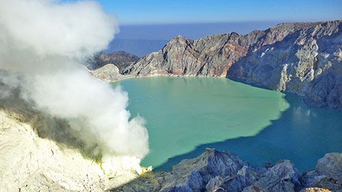
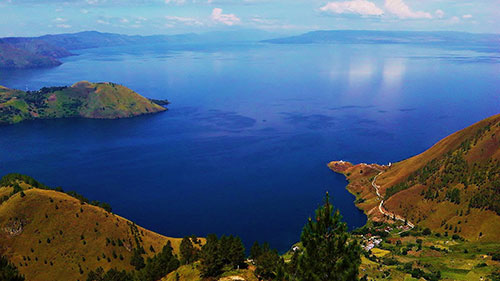

В данном разделе находятся все вулканы этой страны на нашем сайте.
Действующий вулкан Иджен на острове Ява в Индонезии

Вулкан Иджен (Gunung Ijen) считают одним из самых известных в Индонезии, кроме того рейтинг его популярности
достаточно высок, его посещает большое число туристов со всего мира.
Его еще называют Кавах Иджен – это синоним от названия сернистого озера Кавах Иджен или просто Кавах. Это
действующий стратовулкан расположен на острове Ява высота его 2386 м, и его используют для добычи полезных
ископаемых, в частности серы
Серу добывают на берегу серного озера, которое и является уникальностью этого вулкана. Расположено озеро в
кратере вулкана, оно необыкновенно красиво, вода в нем изумрудного цвета, но эта красота опасна – озеро
наполнено миллионами тонн смеси серной и соляной кислот. Это самое крупное кислотное озеро в мире. Кроме этого,
по подсчетам ученых в озере растворено свыше 200 тысяч тонн алюминия. Так, один литр концентрированной кислоты
из озера содержит 5 г этого металла.
Но то, что при добыче серы здесь используется ручной труд, и он настолько низкооплачиваемый, что большинство
рабочих не могут позволить купить себе элементарное средство защиты – это просто варварство. Рабочие-сборщики
серы носят корзины с сырьем весом почти 80 кг по несколько раз в день, преодолевая расстояние со дна кратера
вулкана до его подножия и зарабатывая при этом 10 долларов в день. Из-за таких нечеловеческих условий средняя
продолжительность индонезийских добытчиков серы составляет 30 лет. Отметим, что в окрестностях вулкана проживает
около 12000 человек. Добытая сера отправляется на местный завод Джамбу, где после переработки ее используют
различные фабрики для вулканизации резины, при отбеливании сахара и многих других производственных
процессов.
Ну что касается путешествия туристов на вулкан и к его кратеру, то это конечно незабываемо красиво! Около 1,5
часов уйдет на восхождение к его вершине и особой физической подготовки оно не потребует. С горы откроются
великолепные живописные виды на окрестности острова, на изумрудное озеро, окруженное серными скалами и
тянущимися сернистыми шлейфами.
Сейчас вулкан проявляет незначительную активность, что сопровождается небольшими подземными толчками,
изменением цвета озера (зеленый меняется на белый или коричневый), образованием пены, незначительной активностью
фумарол
Мощнейший супервулкан Тоба на индонезийском острове Суматра

Индонезийский супервулкан Тоба (Toba) считается самым мощнейшим вулканом планеты. Месторасположение – остров
Суматра, Индонезия, высота составляет 2157 м. Образовался он в период голоцена, сейчас это потухший вулкан.
Мега колоссальное извержение этого вулкана, произошедшее примерно 74 тысячи лет назад стало крупнейшей
катастрофой на Земле и якобы изменило ход эволюции человека.
По геологическим данным, из недр земли было извергнуто миллионы тонн пепла и излилось около 3000 кубометров.
По мнению и оценке ученых, извергнутый пепел вулкана смог бы накрыть территорию равную площади современной
России метровым слоем. Выброс такого огромнейшего объема пеплового материала как говорится, затмил Солнце, его
лучи не могли проникнуть к поверхности нашей планеты, что привело к наступлению вулканической зимы. Пепловый
слой толщиной до 10 м покрыл архипелаг, пепловые следы были найдены даже на территории Индии.
От взрыва вулкана образовалась воронка (кальдера), площадь которой составляет 1775 кв. км, размером 30 км на
100 км. Постепенно кальдера наполнялась водой, таким образом, образовалось озеро, которое является самым большим
вулканическим озером на планете. Его глубина достигает 500 м.
Сейчас это великолепное место с фантастическими пейзажами, и не верится, что здесь буйствовала разрушительная
стихия. В центре озера находится остров Самосир, являющийся еще одним вулканическим образованием. На острове
проживает народность – батаки, жилища, которых очень похожи на сказочные избушки.
Хотя вулкан Тоба считается потухшим, но под толщей воды вулканического озера продолжается вулканическая
активность, подтверждением чего является тот же остров Самосир как возрождающийся вулканический купол. Еще один
совсем молодой купол возвышается возле административного центра Пангуруран. По мнению экспертов и ученых, в
будущем может произойти взрыв этого супервулкана. Но ближайшее будущее – это и 10 лет, и 1000 лет и 100000 лет,
так что когда точно рванет, никто не может предсказать. Регион довольно активизировался и в плане сейсмичности и
в плане извержения вулканов. Под вулканом Тоба существует очаг с магмой, и вполне возможно, его могут разбудить
все эти события и спровоцировать взрыв. Но это только предположение, а не утверждение.